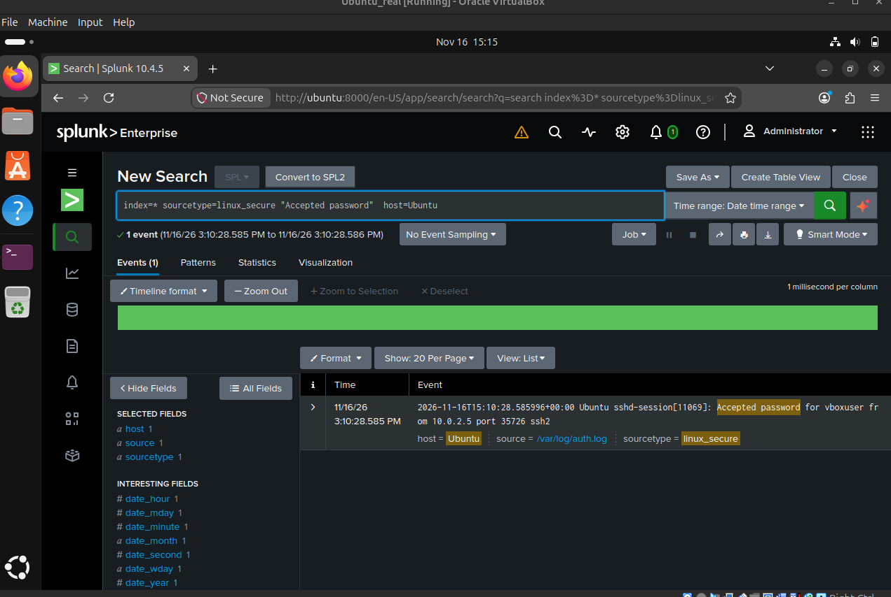
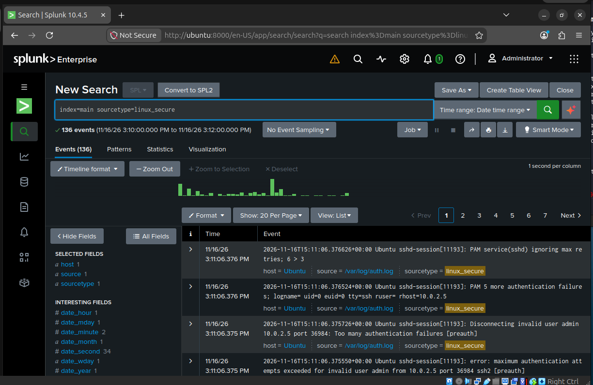

Learning by
investigating the evidence.
I'm Aryan. I am building practical blue-team skills through home labs, log analysis and incident documentation. This portfolio includes a screenshot-based Ubuntu SSH investigation and Python security tools with source code and sample output.
Lab investigations & notes
Every entry links to evidence or source code in the repository.
SSH Authentication Review
Reviewed Ubuntu auth.log screenshots in Splunk. Documented accepted and failed SSH authentication events and the limits of the available evidence.
Read lab report ↗VulnShield
Streamlit dashboard that searches the NIST NVD, flags CISA Known Exploited Vulnerabilities and tracks remediation status. Source code included.
View project ↗Malware Detection Tool
Flask web app that checks a file or SHA-256 hash against a MalwareBazaar/ThreatFox hash database, ClamAV and a YARA rule. Includes a harmless test sample.
View project ↗IP Reputation Checker
CLI tool that matches IPs against 5 public threat feeds, optional VirusTotal, with CSV and HTML reports. Includes real scan results from my test runs.
View project ↗Sensitive Data Detector
Python scanner that finds emails, API keys and passwords in text files, tested on dummy data included in the repository.
View project ↗What I can help with
Entry-level, fixed-scope work. I work only on systems and data that I have written permission to review.
Log Review & Incident Report
Review of Linux or Windows authentication logs, with a clear timeline of what the logs show and what still needs validation.
See sample report ↗Alert Triage
Review of security alerts to separate false positives from events that need escalation, with notes for handoff.
Request this ↗Phishing Email Analysis
Check of sender, headers and links in a suspicious email, with a short written verdict and recommended next steps.
Request this ↗Vulnerability Research & Tracking
CVE lookup against NVD and CISA KEV, with severity, remediation guidance and a tracking sheet.
See VulnShield ↗IP & File Reputation Checks
Checking IP addresses and file hashes against public threat feeds, with CSV and HTML reports.
See IP checker ↗Security Automation Scripts
Small Python tools for repetitive security tasks, such as log parsing, data-leak scanning and reporting.
See example tools ↗Basic Penetration Testing
Entry-level web and network testing for a scope you approve in writing, with a clear report of findings and fixes. Lab-based experience.
Request this ↗Splunk screenshots
Original screenshots from the SSH authentication review. Open the report for the full timeline and analysis.




Coursework
Course completion recorded from the supplied Tutedude certificate.
Cybersecurity Course
Tutedude
Completed on 11 November 2026. Certificate ID: TD-ARYA-CS-0613.
Tools & topics
Areas I have practised or studied through labs and coursework.
Understand the event.
Show the evidence.
I am interested in SOC and blue-team work. When I document an investigation, I try to separate what the logs actually show from what still needs validation. My portfolio only lists work that has evidence or source code in the repository.
See my GitHub profile ↗Connect with me
For freelance security work, collaboration and entry-level opportunities. Email: sokhendearyan85@gmail.com
Email me ↗ LinkedIn profile ↗ GitHub profile ↗